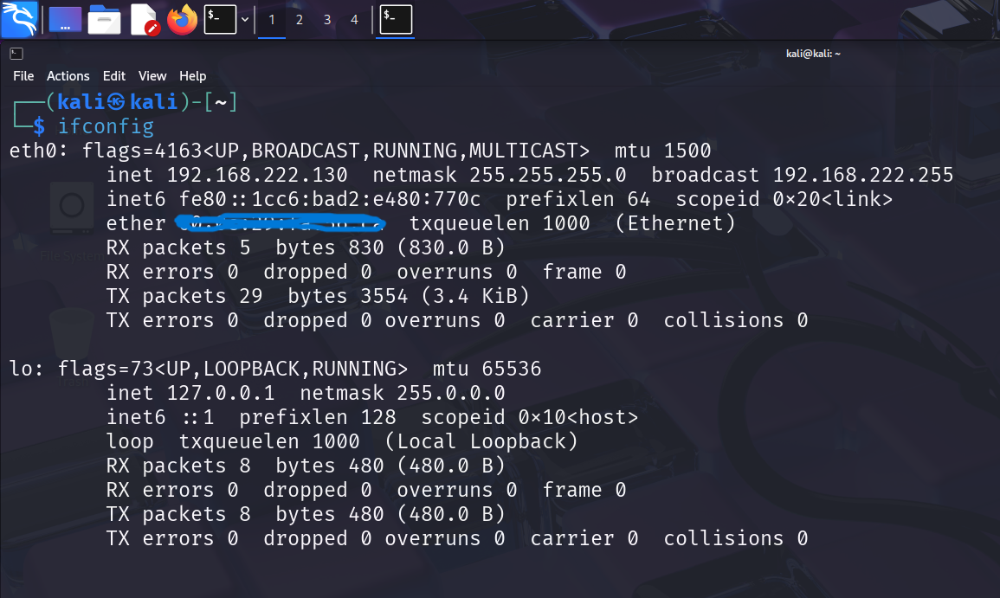
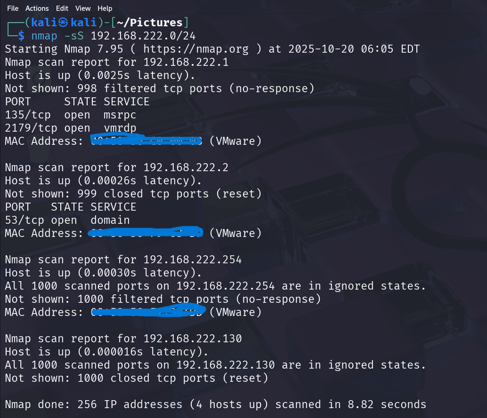
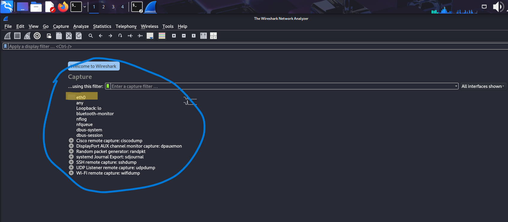

To find local IP range we should know our ip address in linux we can use ifconfigto know our ip and subnet mask while in winodws we can use ipconfigfor the same
s
Now we know our ip and subnet and the range of your local network is 192.168.222.130/24
Now performing TCP SYN scan using nmap -sS switch

In the scan result we can see there are 4 hosts up in the network- 192.168.222.1
- 192.168.222.2
- 192.168.222.130
- 192.168.222.254
In the result we can also see PORT, STATEand SERVICESrunnning on the hosts
Now capture packets using wireshark open wireshark its starting window will show us available interfaces to capture the traffic select the interface in which want to capture the traffic,In our case it is eth0 click on it, then wireshark will start capturing the packets

Questions from this task
1.Common services runnning on the ports
While analysing the nmap result we can see service and ports on the hosts some of them are following- Port 135 service runnning is msrpc"used by Microsoft's Remote Procedure Call (MSRPC) service to enable communication between different programs on a network, allowing a client to execute a procedure on a remote server"
.
Port 2179 vmrpd "
used by Microsoft's Remote Desktop Virtualization Host (RDVH) for connecting to the console of Hyper-V virtual machines"
Port 53
DnsDomain Name Resolution: When you type a website address, your device uses Port 53 to send a DNS query to a server to find the corresponding IP address.
2. Identify potential security risks from open ports
Open ports create security risks by providing an entry point for attackers to exploit vulnerabilities, leading to unauthorized access, data breaches, and malware infections.
Port 53 security risks An open port 53 is vulnerable to several security risks, primarily related to DNS (Domain Name System) exploits, such as DDoS attacks, DNS spoofing, DNS tunneling, and DNS hijacking.
Port 135 An open port 135 poses significant security risks because it is used by Microsoft's RPS (Remote Procedure call) service, allowing attackers to exploit vulnerabilities for RCE (Remote Code Execution) unauthorized access to data, and Denial-of-Service (DoS) attacks.
Port 2179 Potential security risks from an open port 2179 are primarily associated with the abuse of the Hyper-V Remote Desktop Protocol (RDP) functionality it uses. Leaving this port open and unprotected creates an entry point for unauthorized access to a Hyper-V host and its guest virtual machines (VMs).